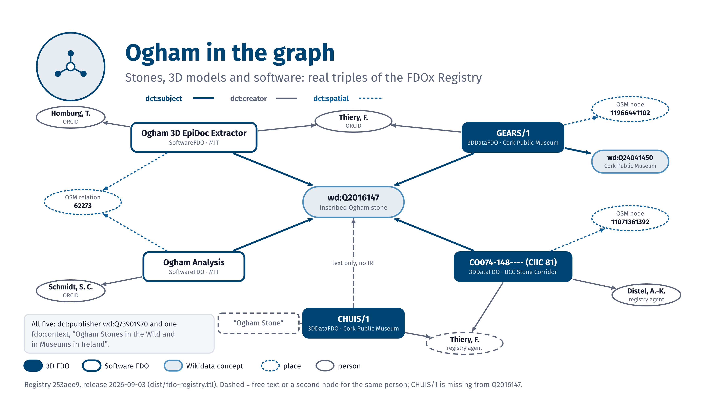
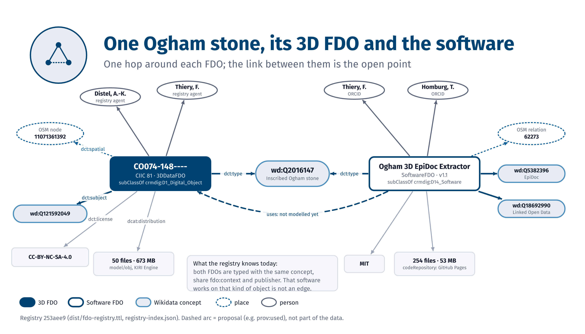
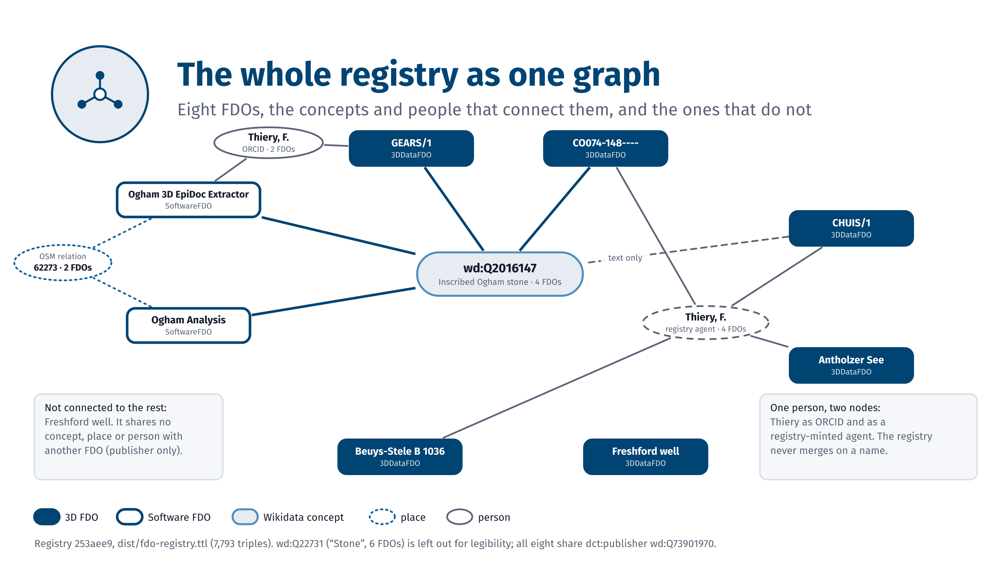

Ogham graph pictures
Graph pictures of Ogham stones, their 3D FDOs and the software that uses them.
Draft, as of 2026-11-05. These graphics are drafts for the ArcheoFOSS 2026 talk. Dashed outlines mark what is planned, solid outlines what exists.
Draft, as of 2026-11-05

OG.1Ogham in the graph: stones, 3D models and software around the Wikidata item Q2016147, drawn from real registry triples.
FDOx-squirrel, fdox-visuals (Florian Thiery, LEIZA). Code: MIT licence. Data: FDOx registry 253aee9 (release 2026-09-03). Labels are those of the bundles.


Draft, as of 2026-11-05

OG.2One Ogham stone, its 3D FDO and the software: one hop around each FDO. The link between them is the open point (not modelled yet).
FDOx-squirrel, fdox-visuals (Florian Thiery, LEIZA). Code: MIT licence. Data: FDOx registry 253aee9 (release 2026-09-03). Labels are those of the bundles.


Draft, as of 2026-11-05

OG.3The whole registry as one graph: eight FDOs, the concepts and people that connect them, and the ones that do not.
FDOx-squirrel, fdox-visuals (Florian Thiery, LEIZA). Code: MIT licence. Data: FDOx registry 253aee9 (release 2026-09-03). Labels are those of the bundles.